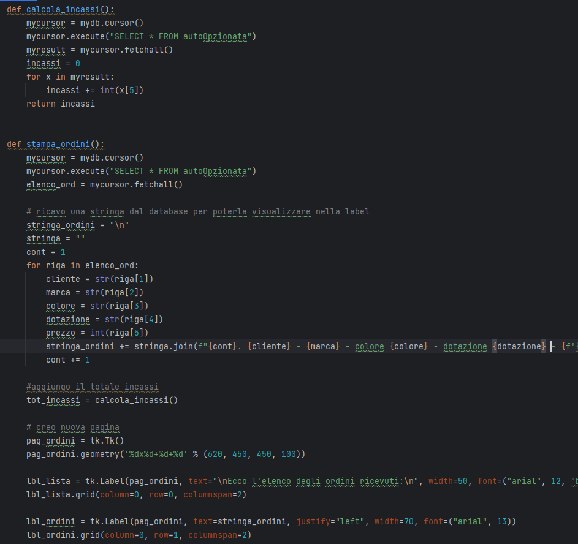
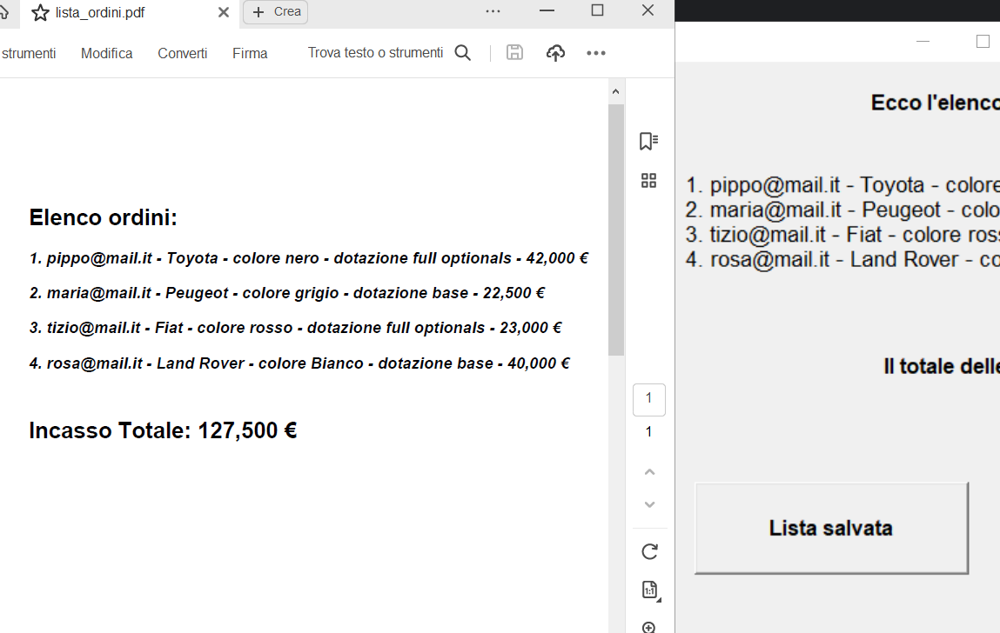
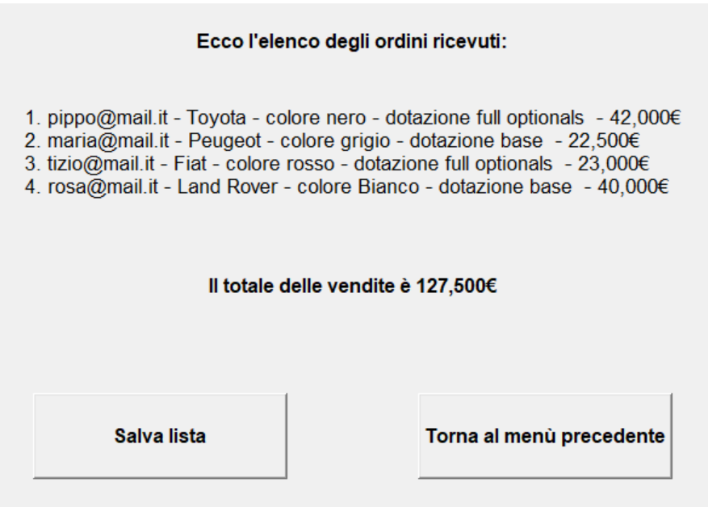
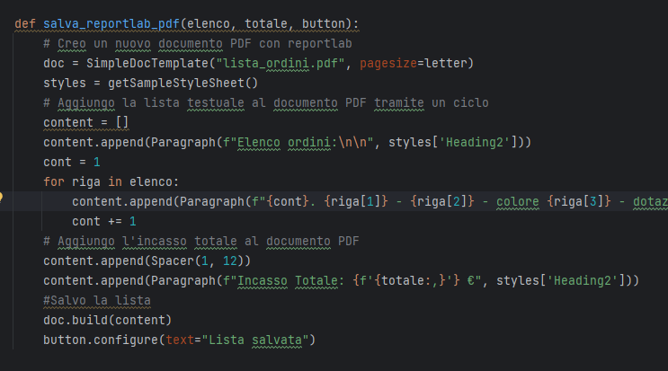
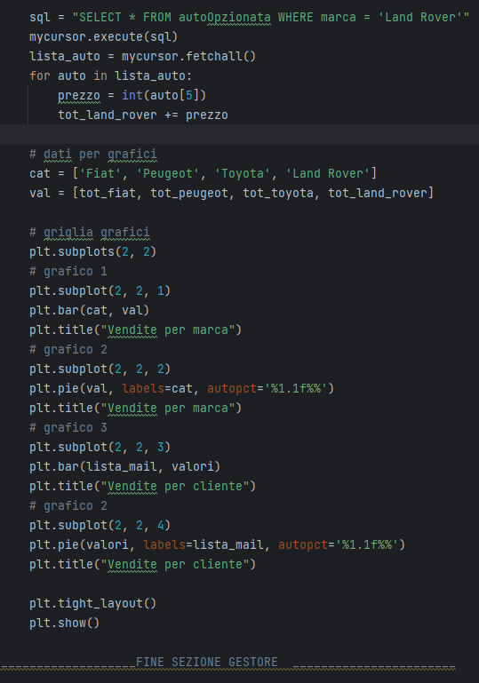
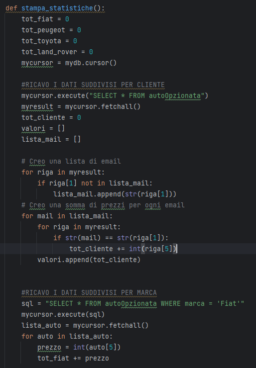
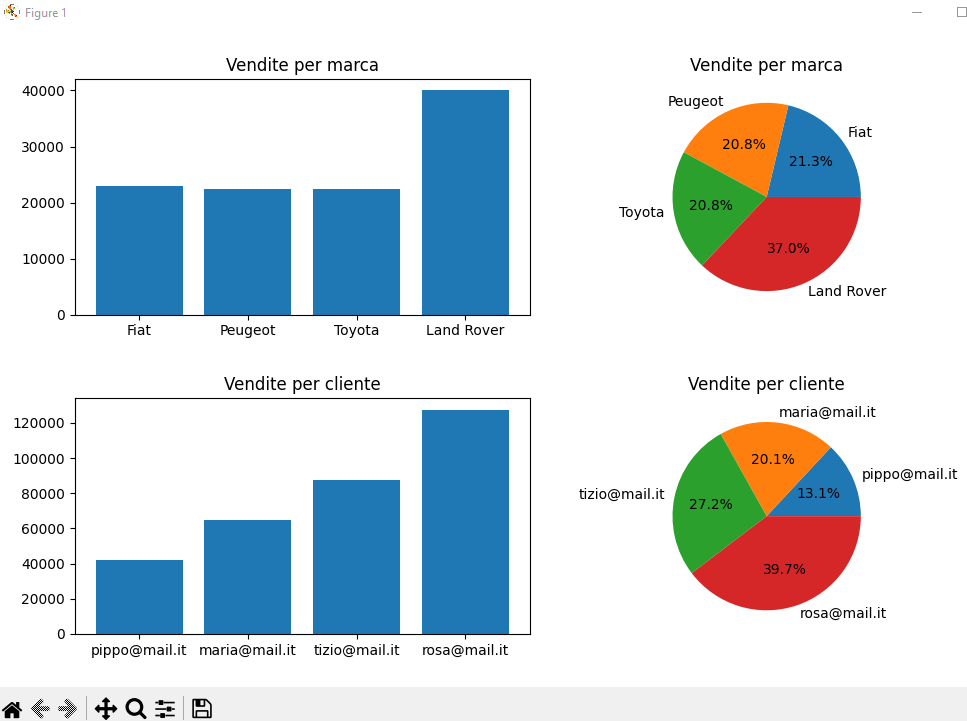

Concessionaria
Il progetto gestisce gli ordini di auto presso una concessionaria.
All'avvio del programma, l'utente può configurare la propria auto scegliendo marca, colore ed optionals
tramite una combo selection, dunque inserire la propria mail e richiedere l'invio del preventivo.


I singoli elementi della combo sono associati ad un prezzo tramite la classe Prezzi e raggruppati in delle
liste distinte per categoria.
Quando l'utente invia la propria configurazione, una serie di cicli FOR scorre queste liste per individuare
il prezzo di ogni elemento della selezione e comporre così il valore finale dell'auto.
L'importo risultante verrà visualizzato nella stessa pagina ed anche inviato all'email indicata dal cliente,
sfruttando i moduli Email.mime ed Smtplib.
Se l'utente conferma l'ordine, questo viene salvato in database MySQL per essere successivamente elaborato.


Il gestore può accedere alla sua area riservata dall'apposito pulsante della finestra principale.
Una volta loggato con le proprie credenziali, si apre una nuova pagina con il menù delle opzioni (Stampa
Incassi, Ordini ricevuti e Statistiche di vendita).


La funzione Stampa_incassi chiama Calcola_incassi e visualizza il totale ottenuto direttamente sulla label
di una nuova pagina.
La funzione Calcola_incassi preleva dal database la lista aggiornata delle vendite e tramite un ciclo FOR
somma la cella Prezzo per ogni auto della tabella, restituendo la sommatoria.
La funzione Stampa_ordini preleva tutte le colonne della tabella e le aggancia riga per riga ad una stringa,
sfruttando un ciclo for ed il metodo Join.
Finito il ciclo verrà richiamata Calcola_incassi ed il totale verrà inserito a chiusura della stringa.

L'utente può salvare in PDF la lista generata da Stampa_ordini.
Cliccando sul bottone "Salva lista" viene chiamata la funzione Salva_reportlab_pdf alla quale vengono passati come
parametri l'elenco degli ordini, il totale incassi calcolato ed il bottone stesso, che cambierà testo in
"Lista salvata" una volta effettuato il salvataggio.
Per la creazione del file, la formattazione ed il salvataggio si fa uso della libreria Reportlab.



Infine, la funzione Stampa_statistiche elabora quattro diversi grafici con la libreria Matplotlib.
Per calcolare i dati delle vendite suddivisi per cliente, viene prima creata una lista di tutti i clienti
che hanno acquistato pescandoli dalla tabella delle vendite (il ciclo verifica se il cliente non sia già
presente in lista, per evitare doppioni).
Successivamente, due cicli FOR annidati scorrono questa lista e per ogni cliente pescano e sommano tutte
le celle Prezzo delle vendite a lui associate.
I totali per cliente così ottenuti vengono inseriti in un'altra lista che avrà la stessa lunghezza e la
stessa sequenza della lista clienti per cui, allo stesso indice avremo in una lista il cliente e nell'altra
il totale speso.
Per calcolare le vendite suddivise per auto, vengono pescate e salvate in una lista tutte le vendite relative
ad una marca.
Successivamente viene fatta scorrere la lista creata sommando tutta la colonna Prezzo.
Questo passaggio andrà fatto per ogni marca ed i totali per auto ottenuti verrano inseriti nella lista "val"
che sarà la base numerica per la creazione del grafico.
Per ogni tipo di dato (vendite per cliente e vendite per marca) verranno elaborati un grafico a torta ed un istogramma.


